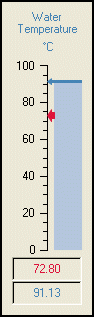

KineticaRT Studio SetpointLinear

Features
The SetpointLinear control displays the value of two numeric channels.
It is intended for use where a process is being controlled and a one channel has
to reach a set point value stored in a second channel.
It has the following features:
-
Display of one channels description or a custom description
-
Display of one channels tooltip or a custom tooltip
-
Display of one channels units.
-
Display of the values of two channels using two needles.
-
Display of the values of two channels using two digital displays
-
Optional Display of one channels value using linear fill.
Connection
The KineticaRT Studio SetpointLinear should be connected to channels containing
values of type KineticaRT.Values.Double.